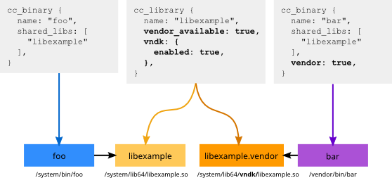

In Android 8.1 and higher, the build system has built-in VNDK support. When VNDK support is enabled, the build system checks the dependencies between modules, builds a vendor-specific variant for vendor modules, and automatically installs those modules into designated directories.
VNDK build support example
In this example, the Android.bp module definition defines a
library named libexample. The vendor_available
property indicates framework modules and vendor modules may depend on
libexample:

Both the framework executable /system/bin/foo and the vendor
executable /vendor/bin/bar depend on libexample and
have libexample in their shared_libs properties.
If libexample is used by both framework modules and vendor
modules, two variants of libexample are built. The core variant
(named after libexample) is used by framework modules and the
vendor variant (named after libexample.vendor) is used by vendor
modules. The two variants are installed into different directories:
- The core variant is installed into
/system/lib[64]/libexample.so. - The vendor variant is installed into
/system/lib[64]/vndk/libexample.sobecausevndk.enabledistrue.
For more details, see Module definition.
Configuring build support
To enable full build system support for a product device, add
BOARD_VNDK_VERSION to BoardConfig.mk:
BOARD_VNDK_VERSION := current
This setting has a global effect: When defined in
BoardConfig.mk, all modules are checked. As there is no mechanism
to blacklist or whitelist an offending module, you should clean all
unnecessary dependencies before adding BOARD_VNDK_VERSION. You
can test and compile a module by setting BOARD_VNDK_VERSION in
your environment variables:
$ BOARD_VNDK_VERSION=current m module_name.vendor
When BOARD_VNDK_VERSION is enabled, several default global
header search paths are removed. These include:
frameworks/av/includeframeworks/native/includeframeworks/native/opengl/includehardware/libhardware/includehardware/libhardware_legacy/includehardware/ril/includelibnativehelper/includelibnativehelper/include_deprecatedsystem/core/includesystem/media/audio/include
If a module depends on the headers from these directories, you must specify
(explicitly) the dependencies with header_libs,
static_libs, and/or shared_libs.
Module definition
To build Android with BOARD_VNDK_VERSION, you must revise the
module definition in either Android.mk or
Android.bp. This section describes different kinds of module
definitions, several VNDK-related module properties, and dependency checks
implemented in the build system.
Vendor modules
Vendor modules are vendor-specific executables or shared libraries that
must be installed into a vendor partition. In Android.bp files,
vendor modules must set vendor or proprietary property to true.
In Android.mk files, vendor modules must set
LOCAL_VENDOR_MODULE or LOCAL_PROPRIETARY_MODULE to
true.
If BOARD_VNDK_VERSION is defined, the build system disallows
dependencies between vendor modules and framework modules and emits errors if:
- a module without
vendor:truedepends on a module withvendor:true, or - a module with
vendor:truedepends on a non-llndk_librarymodule that has neithervendor:truenorvendor_available:true.
The dependency check applies to header_libs,
static_libs, and shared_libs in
Android.bp, and to LOCAL_HEADER_LIBRARIES,
LOCAL_STATIC_LIBRARIES and LOCAL_SHARED_LIBRARIES in
Android.mk.
LL-NDK
LL-NDK shared libraries are shared libraries with stable ABIs. Both framework
and vendor modules share the same and the latest implementation. For each
LL-NDK shared library, Android.bp contains a
llndk_library module definition:
llndk_library {
name: "libvndksupport",
symbol_file: "libvndksupport.map.txt",
}
This module definition specifies a module name and a symbol file that describes the symbols visible to vendor modules. For example:
LIBVNDKSUPPORT {
global:
android_load_sphal_library; # vndk
android_unload_sphal_library; # vndk
local:
*;
};
Based on the symbol file, the build system generates a stub shared library for
vendor modules, which link with these libraries when
BOARD_VNDK_VERSION is enabled. A symbol is included in the stub
shared library only if it:
- Is not defined in the section end with
_PRIVATEor_PLATFORM, - Does not have
#platform-onlytag, and - Does not have
#introduce*tags or the tag matches with the target.
VNDK
In Android.bp files, cc_library,
cc_library_static, cc_library_shared, and
cc_library_headers module definitions support three VNDK-related
properties: vendor_available, vndk.enabled, and
vndk.support_system_process.
If vendor_available or vndk.enabled is
true, two variants (core and vendor) may be
built. The core variant should be treated as a framework module and the vendor
variant should be treated as a vendor module. If some framework modules depend
on this module, the core variant is built. If some vendor modules
depend on this module, the vendor variant is built. The build system enforces
the following dependency checks:
- The core variant is always framework-only and inaccessible to vendor modules.
- The vendor variant is always inaccessible to framework modules.
- All dependencies of the vendor variant, which are specified in
header_libs,static_libs, and/orshared_libs, must be either anllndk_libraryor a module withvendor_availableorvndk.enabled. - If
vendor_availableistrue, the vendor variant is accessible to all vendor modules. - If
vendor_availableisfalse, the vendor variant is accessible only to other VNDK or VNDK-SP modules (i.e., modules withvendor:truecannot linkvendor_available:falsemodules).
The default installation path for cc_library or
cc_library_shared is determined by the following rules:
- The core variant is installed to
/system/lib[64]. - The vendor variant installation path may vary:
- If
vndk.enabledisfalse, the vendor variant is installed into/vendor/lib[64]. - If
vndk.enabledistrue,vndk.support_system_processcan be eithertrueorfalse. If:false, the vendor variant is installed into/system/lib[64]/vndk-${VER}.true, the vendor variant is installed to/system/lib[64]/vndk-sp-${VER}.
- If
The table below summarizes how the build system handles the vendor variants:
| vendor_available | vndk enabled |
vndk support_same_process |
Vendor variant descriptions |
|---|---|---|---|
true |
false |
false |
The vendor variants are VND-ONLY. Shared libraries are
installed into /vendor/lib[64]. |
true |
Invalid (Build error) | ||
true |
false |
The vendor variants are VNDK. Shared libraries are installed
to /system/lib[64]/vndk-${VER}. |
|
true |
The vendor variants are VNDK-SP. Shared libraries are
installed to /system/lib[64]/vndk-sp-${VER}. |
||
|
|
|
No vendor variants. This module is FWK-ONLY. |
true |
Invalid (Build error) | ||
true |
false |
The vendor variants are VNDK-Private. Shared libraries are
installed to /system/lib[64]/vndk-${VER}.These must not be
directly used by vendor modules. |
|
true |
The vendor variants are VNDK-SP-Private. Shared libraries are
installed to /system/lib[64]/vndk-sp-${VER}. These must not be
directly used by vendor modules. |
VNDK extensions
VNDK extensions are VNDK shared libraries with additional APIs. Extensions are
installed to /vendor/lib[64]/vndk[-sp] (without version suffix)
and override the original VNDK shared libraries at runtime.
Defining VNDK extensions
In Android 9 and higher, Android.bp natively supports VNDK
extensions. To build a VNDK extension, define another module with a
vendor:true and an extends property:
cc_library {
name: "libvndk",
vendor_available: true,
vndk: {
enabled: true,
},
}
cc_library {
name: "libvndk_ext",
vendor: true,
vndk: {
enabled: true,
extends: "libvndk",
},
}
A module with vendor:true, vndk.enabled:true, and
extends properties defines the VNDK extension:
- The
extendsproperty must specify a base VNDK shared library name (or VNDK-SP shared library name). - VNDK extensions (or VNDK-SP extensions) are named after the base module
names from which they extend. For example, the output binary of
libvndk_extislibvndk.soinstead oflibvndk_ext.so. - VNDK extensions are installed into
/vendor/lib[64]/vndk. - VNDK-SP extensions are installed into
/vendor/lib[64]/vndk-sp. - The base shared libraries must have both
vndk.enabled:trueandvendor_available:true.
A VNDK-SP extension must extend from a VNDK-SP shared library
(vndk.support_system_process must be equal):
cc_library {
name: "libvndk_sp",
vendor_available: true,
vndk: {
enabled: true,
support_system_process: true,
},
}
cc_library {
name: "libvndk_sp_ext",
vendor: true,
vndk: {
enabled: true,
extends: "libvndk_sp",
support_system_process: true,
},
}
VNDK extensions (or VNDK-SP extensions) may depend on other vendor shared libraries:
cc_library {
name: "libvndk",
vendor_available: true,
vndk: {
enabled: true,
},
}
cc_library {
name: "libvndk_ext",
vendor: true,
vndk: {
enabled: true,
extends: "libvndk",
},
shared_libs: [
"libvendor",
],
}
cc_library {
name: "libvendor",
vendor: true,
}
Using VNDK extensions
If a vendor module depends on additional APIs defined by VNDK extensions, the
module must specify the name of the VNDK extension in its
shared_libs property:
// A vendor shared library example
cc_library {
name: "libvendor",
vendor: true,
shared_libs: [
"libvndk_ext",
],
}
// A vendor executable example
cc_binary {
name: "vendor-example",
vendor: true,
shared_libs: [
"libvndk_ext",
],
}
If a vendor module depends on VNDK extensions, those VNDK extensions are
installed to /vendor/lib[64]/vndk[-sp] automatically. If a module
no longer depends on a VNDK extension, add a clean step to
CleanSpec.mk to remove the shared library. For example:
$(call add-clean-step, rm -rf $(TARGET_OUT_VENDOR)/lib/libvndk.so)
Conditional compilation
This section describes how to deal with the subtle differences (e.g. adding or removing a feature from one of the variants) between the following three VNDK shared libraries:
- Core variant (e.g.
/system/lib[64]/libexample.so) - Vendor variant (e.g.
/system/lib[64]/vndk[-sp]-${VER}/libexample.so) - VNDK extension (e.g.
/vendor/lib[64]/vndk[-sp]/libexample.so)
Conditional compiler flags
The Android build system defines __ANDROID_VNDK__ for vendor
variants and VNDK extensions by default. You may guard the code
with the C preprocessor guards:
void all() { }
#if !defined(__ANDROID_VNDK__)
void framework_only() { }
#endif
#if defined(__ANDROID_VNDK__)
void vndk_only() { }
#endif
In addition to __ANDROID_VNDK__, different cflags or
cppflags may be specified in Android.bp. The
cflags or cppflags specified in
target.vendor is specific to the vendor variant.
For example, the following Android.bp defines
libexample and libexample_ext:
cc_library {
name: "libexample",
srcs: ["src/example.c"],
vendor_available: true,
vndk: {
enabled: true,
},
target: {
vendor: {
cflags: ["-DLIBEXAMPLE_ENABLE_VNDK=1"],
},
},
}
cc_library {
name: "libexample_ext",
srcs: ["src/example.c"],
vendor: true,
vndk: {
enabled: true,
extends: "libexample",
},
cflags: [
"-DLIBEXAMPLE_ENABLE_VNDK=1",
"-DLIBEXAMPLE_ENABLE_VNDK_EXT=1",
],
}
And this is the code listing of src/example.c:
void all() { }
#if !defined(LIBEXAMPLE_ENABLE_VNDK)
void framework_only() { }
#endif
#if defined(LIBEXAMPLE_ENABLE_VNDK)
void vndk() { }
#endif
#if defined(LIBEXAMPLE_ENABLE_VNDK_EXT)
void vndk_ext() { }
#endif
According to these two files, the build system generates shared libraries with following exported symbols:
| Installation path | Exported symbols |
|---|---|
/system/lib[64]/libexample.so |
all, framework_only |
/system/lib[64]/vndk-${VER}/libexample.so |
all, vndk |
/vendor/lib[64]/vndk/libexample.so |
all, vndk, vndk_ext |
Requirements on the exported symbols
The VNDK ABI checker
compares the ABI of VNDK vendor variants and
VNDK extensions to the reference ABI dumps under
prebuilts/abi-dumps/vndk.
- Symbols exported by VNDK vendor variants (e.g.
/system/lib[64]/vndk-${VER}/libexample.so) must be identical to (not the supersets of) the symbols defined in ABI dumps. - Symbols exported by VNDK extensions (e.g.
/vendor/lib[64]/vndk/libexample.so) must be supersets of the symbols defined in ABI dumps.
If VNDK vendor variants or VNDK extensions fail to follow the requirements above, VNDK ABI checker emits build errors and stops the build.
Excluding source files or shared libraries from vendor variants
To exclude source files from the vendor variant, add them to the
exclude_srcs property. Similarly, to ensure shared libraries are
not linked with the vendor variant, add those libraries to the
exclude_shared_libs property. For example:
cc_library {
name: "libexample_cond_exclude",
srcs: ["fwk.c", "both.c"],
shared_libs: ["libfwk_only", "libboth"],
target: {
vendor: {
exclude_srcs: ["fwk.c"],
exclude_shared_libs: ["libfwk_only"],
},
},
}
In this example, the core variant of libexample_cond_exclude
includes the code from fwk.c and both.c and depends
on the shared libraries libfwk_only and libboth. The
vendor variant of libexample_cond_exclude includes only the code
from both.c because fwk.c is excluded by the
exclude_srcs property. Similarly,
libexample_cond_exclude depends only on the shared library
libboth because libfwk_only is excluded by the
exclude_shared_libs property.
Export headers from VNDK extensions
A VNDK extension may add new classes or new functions to a VNDK shared library. It is suggested to keep those declarations in independent headers and avoid changing the existing headers.
For example, a new header file
include-ext/example/ext/feature_name.h is created for the VNDK
extension libexample_ext:
- Android.bp
- include-ext/example/ext/feature_name.h
- include/example/example.h
- src/example.c
- src/ext/feature_name.c
In the following Android.bp, libexample exports
only include, whereas libexample_ext exports both
include and include-ext. This ensures
feature_name.h won't be incorrectly included by the users of
libexample:
cc_library {
name: "libexample",
srcs: ["src/example.c"],
export_include_dirs: ["include"],
vendor_available: true,
vndk: {
enabled: true,
},
}
cc_library {
name: "libexample_ext",
srcs: [
"src/example.c",
"src/ext/feature_name.c",
],
export_include_dirs: [
"include",
"include-ext",
],
vendor: true,
vndk: {
enabled: true,
extends: "libexample",
},
}
If separating extensions to independent header files is not feasible, an
alternative is to add #ifdef guards. However, make sure that all
VNDK extension users add the define flags. You may define
cc_defaults to add define flags to cflags and link
shared libraries with shared_libs.
For example, to add a new member function Example2::get_b() to
the VNDK extension libexample2_ext, you must modify the existing
header file and add a #ifdef guard:
#ifndef LIBEXAMPLE2_EXAMPLE_H_
#define LIBEXAMPLE2_EXAMPLE_H_
class Example2 {
public:
Example2();
void get_a();
#ifdef LIBEXAMPLE2_ENABLE_VNDK_EXT
void get_b();
#endif
private:
void *impl_;
};
#endif // LIBEXAMPLE2_EXAMPLE_H_
A cc_defaults named libexample2_ext_defaults is
defined for the users of libexample2_ext:
cc_library {
name: "libexample2",
srcs: ["src/example2.cpp"],
export_include_dirs: ["include"],
vendor_available: true,
vndk: {
enabled: true,
},
}
cc_library {
name: "libexample2_ext",
srcs: ["src/example2.cpp"],
export_include_dirs: ["include"],
vendor: true,
vndk: {
enabled: true,
extends: "libexample2",
},
cflags: [
"-DLIBEXAMPLE2_ENABLE_VNDK_EXT=1",
],
}
cc_defaults {
name: "libexample2_ext_defaults",
shared_libs: [
"libexample2_ext",
],
cflags: [
"-DLIBEXAMPLE2_ENABLE_VNDK_EXT=1",
],
}
The users of libexample2_ext may simply include
libexample2_ext_defaults in their defaults
property:
cc_binary {
name: "example2_user_executable",
defaults: ["libexample2_ext_defaults"],
vendor: true,
}
Product packages
In the Android build system, the variable PRODUCT_PACKAGES
specifies the executables, shared libraries, or packages that should be
installed into the device. The transitive dependencies of the specified
modules are implicitly installed into the device as well.
If BOARD_VNDK_VERSION is enabled, modules with
vendor_available or vndk.enabled get special
treatment. If a framework module depends on a module with
vendor_available or vndk.enabled, the core variant
is included in the transitive installation set. Similarly, if a vendor module
depends on a module with vendor_available or
vndk.enabled, the vendor variant is included in the transitive
installation set.
When the dependencies are invisible to the build system (e.g. shared libraries
that may be opened with dlopen() in runtime), you should specify
the module names in PRODUCT_PACKAGES to install those modules
explicitly.
If a module has vendor_available or vndk.enabled,
the module name stands for its core variant. To explicitly specify the
vendor variant in PRODUCT_PACKAGES, append a .vendor
suffix to the module name. For example:
cc_library {
name: "libexample",
srcs: ["example.c"],
vendor_available: true,
}
In this example, libexample stands for
/system/lib[64]/libexample.so and libexample.vendor
stands for /vendor/lib[64]/libexample.so. To install
/vendor/lib[64]/libexample.so, add libexample.vendor
to PRODUCT_PACKAGES:
PRODUCT_PACKAGES += libexample.vendor